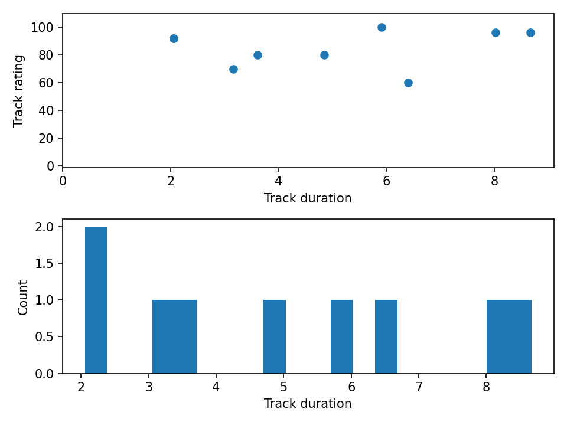
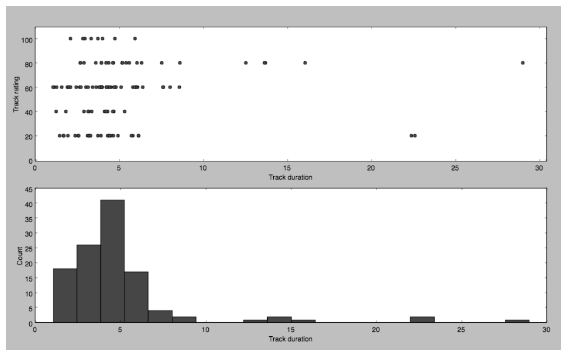

第 1 章 解析 iTunes 播放列表#
本章解决：一个真实的数据小项目——解析 iTunes 导出的播放列表 XML 文件：用字典查找重复音轨，用集合求多个播放列表的共同音轨，用 numpy 数组配合 matplotlib 画出音轨时长直方图和评分-时长散点图。 承上启下：这是全书第一个项目，规模最小，但"读文件 → 用数据结构处理 → 出图 → 命令行分派"的骨架贯穿全书：第 2 章万花尺沿用 argparse 与 matplotlib 的套路，第 6 章起处理图像时还会反复用到 numpy 数组的向量化运算。字典、集合、元组这三种 Python 结构也将在后续项目中反复登场。
📓 章代码：nb/ch01.ipynb（分节代码；ch01–08 含固定种子实跑输出，ch09–14 为完整实现待硬件环境）
全书从一个小项目开始热身：playlist.py，它在 iTunes 播放列表文件中查找重复的乐曲音轨，并绘制各种统计数据（音轨长度、评分）。路线是先看 iTunes 播放列表的文件格式，再用 Python 提取文件信息，最后用 matplotlib 画图。学完本章能掌握：
- XML 和属性列表（p-list）文件；
- Python 列表和字典；
- 使用 Python 的 set 对象；
- 使用 numpy 数组；
- 直方图和散点图；
- 用 matplotlib 库绘制简单的图；
- 创建和保存数据文件。
1.0 本章导图#
1.1 iTunes 播放列表文件剖析#
iTunes 资料库中的信息可以导出为播放列表文件（iTunes 中选择 File → Library → Export Playlist）。播放列表文件以可扩展标记语言（XML，eXtensible Markup Language）写成——一种基于文本的语言，旨在分层表示基于文本的信息：由一些用户定义的标签构成树状集合，标签形如 <MyTag>，每个标签可以有一些属性和子标签，其中包含附加的信息。
这类文件叫属性列表（p-list，Property List）文件。属性列表文件把对象表示为字典——把键和值关联起来的数据结构，查找值非常容易。p-list 使用字典的字典：与键关联的值往往自身又是另一个字典，甚至一个字典列表。在文本编辑器中打开播放列表文件，会看到类似这样的简化版本（编号沿用原书标注）：
<?xml version="1.0" encoding="UTF-8"?>
① <!DOCTYPE plist PUBLIC "-//Apple Computer//DTD PLIST 1.0//EN"
"http://www.apple.com/DTDs/PropertyList-1.0.dtd">
② <plist version="1.0">
③ <dict>
④ <key>Major Version</key><integer>1</integer>
<key>Minor Version</key><integer>1</integer>
--snip--
⑤ <key>Tracks</key>
<dict>
<key>2438</key>
⑥ <dict>
<key>Track ID</key><integer>2438</integer>
<key>Name</key><string>Yesterday</string>
<key>Artist</key><string>The Beatles</string>
<key>Composer</key><string>Lennon [John], McCartney [Paul]</string>
<key>Album</key><string>Help!</string>
</dict>
--snip--
</dict>
⑦ <key>Playlists</key>
⑧ <array>
<dict>
<key>Name</key><string>Now</string>
<key>Playlist ID</key><integer>21348</integer>
--snip--
<array>
⑨ <dict>
<key>Track ID</key><integer>6382</integer>
</dict>
--snip--
</array>
</dict>
</array>
</dict>
</plist>
逐层看这份文件：
- ① 文档类型定义（DTD）：
<?xml?>标签确定文件是 XML 文件；紧随其后的 DOCTYPE 定义了 XML 文档的结构——苹果把这个结构放在标签里的统一资源定位符（URL）中，plistlib不去下载它，只把它当作格式声明。 - ②③ 顶层标签：文件声明顶层
<plist>标签，它的唯一子元素是字典<dict>。这个顶层字典包含了各种键：④ Major Version、Minor Version 等版本信息，以及程序真正感兴趣的键。 - ⑤⑥ Tracks 键：它对应的值也是一个字典，把整数的音轨 ID（如
2438）映射到另一个字典，后者包含 Name、Artist、Composer、Album 等元素——音乐收藏中的每个音轨都有唯一的音轨 ID 键。后面找重复、找共同音轨，全部从这本"音轨字典"出发。 - ⑦⑧⑨ Playlists 键：播放列表的顺序由它定义，是顶层字典的一个子节点。它的值是一个数组（
<array>），每个元素是一个播放列表字典（Name、Playlist ID 等），其中的Playlist Items数组只存 Track ID——播放列表只是"音轨 ID 的名单"，音轨本体都在 Tracks 字典里。
拓展：iTunes 还有一种二进制格式
iTunes 菜单里导出 XML 时得到的就是上面这种文本 XML；资料库本体 iTunes Library.itl（以及勾选"以二进制导出"的情形）是另一种非 XML 格式，plistlib 的 load() 靠文件头 bplist00 自动识别二进制 p-list。本章只处理文本 XML。
1.2 所需模块#
- plistlib：Python 内置模块，读取播放列表文件（解析 p-list 不用自己写 XML 解析）；
- matplotlib：绘图软件包，由已故的 John Hunter 开发；
- numpy：用它的数组存储数据（下一节会看到它带来的向量化便利）。
1.3 代码#
项目的四个目标：找到音乐收藏中的重复乐曲；确定播放列表之间共同的音轨；绘制音轨时长的分布图（直方图）；绘制歌曲评分和时长之间的关系图（散点图）。
- 找重复：遍历 Tracks 字典中的音轨名称，找到同名的再用音轨长度作附加准则——名称相同但长度不同的音轨，可能是不同的版本；
- 找共同音轨：把音乐收藏导出为若干播放列表文件，收集每个播放列表的音轨名称作为集合，求集合的交集；
- 绘图：直方图显示时长分布，散点图比较评分与长度。
1.3.1 查找重复#
# ===== 书 1.3.1 节 findDuplicates()（Python 3 版）=====
def findDuplicates(fileName):
print('Finding duplicate tracks in %s...' % fileName)
# read in a playlist
with open(fileName, 'rb') as f: # 读入播放列表，返回顶层字典
plist = plistlib.load(f)
# get the tracks from the Tracks dictionary
tracks = plist['Tracks'] # 拿到 Tracks 字典
# create a track name dictionary
trackNames = {} # 键 = 音轨名，值 = (时长, 计数) 元组
# iterate through the tracks
for trackId, track in tracks.items(): # items() 同时取键和值
try:
name = track['Name'] # 音轨名称
duration = track['Total Time'] # 音轨时长（毫秒）
# look for existing entries
if name in trackNames: # 这个名字见过吗？
# if a name and duration match, increment the count
# round the track length to the nearest second
if duration//1000 == trackNames[name][0]//1000:
# 时长取整到秒后相同 → 判定重复，计数加一
count = trackNames[name][1]
trackNames[name] = (duration, count+1)
else:
# 同名不同长：当作另一个版本，计数重置为 1
trackNames[name] = (duration, 1)
else:
# add dictionary entry as tuple (duration, count)
trackNames[name] = (duration, 1) # 第一次见到：新条目
except:
# ignore
pass # 有的音轨没有 Name 字段，跳过
plistlib 读入文件返回顶层字典；plist['Tracks'] 拿到音轨字典；trackNames 是待构建的"重复登记簿"——键是音轨名，值是（时长，计数）元组。items() 是 Python 迭代字典时同时取得键和值的常用方法，这里键 trackId 用不上（名字才是判重依据），但照收不误。
判重的两道关卡都在字典操作里：
name in trackNames——in关键字检查当前乐曲名是否已在登记簿里；duration//1000 == trackNames[name][0]//1000——时长以毫秒存储，//是取整除法（整商），把毫秒除以 1000 取整即换算成整秒。两边都取整后再比较，只有毫秒级差异的两个音轨会被认为相同——123456和123500毫秒都取整为 123 秒，判为重复；但同名不同长（如录音室版和现场版）秒数不同，走else分支把计数重置为 1，不算重复。
主循环套在 try 里，是因为有些音轨可能没有定义名称——缺字段时抛 KeyError，except 部分只有 pass（什么也不做），直接跳过该音轨。
Python 3 适配：plistlib.readPlist() 已移除
原书写 plist = plistlib.readPlist(fileName)。readPlist() 自 Python 3.4 起弃用、3.9 起彻底移除，现在运行会直接 AttributeError。改用新 API，且必须以二进制模式打开（plistlib.load 要读字节流，文本模式文件对象会报 TypeError）：
本章三个函数里出现的每一处 readPlist() 都做同样替换，下文不再重复。
1.3.2 提取重复#
登记簿建好后，把真正的重复项提取出来并存文件（这是 findDuplicates() 方法的后半段）：
# ===== 书 1.3.2 节 提取重复并写入 dups.txt =====
# store duplicates as (name, count) tuples
dups = [] # 存放重复乐曲的列表
for k, v in trackNames.items():
if v[1] > 1: # v 是 (duration, count)，v[1] 是计数
dups.append((v[1], k)) # 存成 (计数, 名称) 元组
# save duplicates to a file
if len(dups) > 0:
print("Found %d duplicates. Track names saved to dups.txt" % len(dups))
else:
print("No duplicate tracks found!")
f = open("dups.txt", "w")
for val in dups:
f.write("[%d] %s\n" % (val[0], val[1])) # 每行：[计数] 名称
f.close()
迭代 trackNames 字典，v[1]（元组的第二个元素）是计数，大于 1 就说明这个名称出现了不止一次，把（计数，名称）元组追加进 dups 列表。注意追加顺序是 (v[1], k)——计数在前、名称在后，这样写文件时 val[0] 是计数、val[1] 是名称。最后打印结果，并用 open() 打开 dups.txt 逐行写入。
一个细节：原书代码里 open("dups.txt", "w") 并不在 if 里面——哪怕没有找到重复，也会创建一个空的 dups.txt；if/else 只控制打印的提示语。
1.3.3 查找多个播放列表中共同的音轨#
# ===== 书 1.3.3 节 findCommonTracks()（Python 3 版）=====
def findCommonTracks(fileNames):
"""
Find common tracks in given playlist files,
and save them to common.txt.
"""
# a list of sets of track names
trackNameSets = [] # 存放每个播放列表的"音轨名集合"
for fileName in fileNames:
# create a new set
trackNames = set() # 每个文件配一个新 set
# read in playlist
with open(fileName, 'rb') as f:
plist = plistlib.load(f)
# get the tracks
tracks = plist['Tracks']
# iterate through the tracks
for trackId, track in tracks.items():
try:
# add the track name to a set
trackNames.add(track['Name']) # 集合自动去重
except:
# ignore
pass
# add to list
trackNameSets.append(trackNames) # 一个文件读完，登记它的集合
# get the set of common tracks
commonTracks = set.intersection(*trackNameSets) # * 解包：求所有集合的交集
# write to file
if len(commonTracks) > 0:
f = open("common.txt", "w")
for val in commonTracks:
s = "%s\n" % val
f.write(s) # Python 3 文本模式直接写 str
f.close()
print("%d common tracks found. "
"Track names written to common.txt." % len(commonTracks))
else:
print("No common tracks!")
传入的是播放列表文件名的列表。对每个文件：新建一个 Python set 对象；读入播放列表、取得 Tracks 字典（与 findDuplicates() 相同的套路）；遍历音轨，把名称 add() 进集合——集合自动去重，同一列表里重复出现的名字只算一个。读完一个文件，就把这个集合加入 trackNameSets 列表。
关键的一行是交集运算：
set.intersection(s1, s2, ...) 接受任意多个集合，返回它们的公共元素——数学上的 \(S_1 \cap S_2 \cap \cdots \cap S_n\)。而 trackNameSets 是一个"集合的列表"，不是散着的一堆参数，所以用 Python 的 * 运算符把列表解包（unpack）成一个个位置参数：set.intersection(*[s1, s2, s3]) 等价于 set.intersection(s1, s2, s3)。集合有几个就传几个，两个播放列表、十个播放列表都一样处理。（另一种等价写法是 trackNameSets[0].intersection(*trackNameSets[1:])：以第一个集合为基准，与其余所有集合求交。）
找到共同音轨就写入 common.txt。原书在写入前做 s.encode("UTF-8")，声称"确保所有 Unicode 字符都正确处理"——这在 Python 2 里是必需的，在 Python 3 里反而会让程序崩溃。
Python 3 适配：文本模式文件不能 write 字节串
原书 f.write(s.encode("UTF-8")) 是 Python 2 遗留写法（Python 2 的 str 就是字节串）。Python 3 的文本模式文件要求 write() 的参数是 str，传入字节串直接报错：TypeError: write() argument must be str, not bytes。改成直接写：
若要显式控制编码，在打开时声明即可：open("common.txt", "w", encoding="utf-8")。
拓展：输出顺序是随机的
集合是无序结构，for val in commonTracks 的遍历顺序取决于元素的哈希值——同一份数据，这次运行和下次运行写出的行序可能不同（本笔记实跑就复现了这一点，见 1.5 节）。在乎顺序就先 sorted(commonTracks)。
1.3.4 收集统计信息#
# ===== 书 1.3.4 节 plotStats() 前半：收集评分与时长 =====
def plotStats(fileName):
"""
Plot some statistics by reading track information from playlist.
"""
# read in a playlist
with open(fileName, 'rb') as f:
plist = plistlib.load(f)
# get the tracks from the playlist
tracks = plist['Tracks']
# create lists of song ratings and track durations
ratings = [] # 评分列表
durations = [] # 时长列表
# iterate through the tracks
for trackId, track in tracks.items():
try:
ratings.append(track['Album Rating']) # 专辑评分
durations.append(track['Total Time']) # 音轨时长（毫秒）
except:
# ignore
pass # 没有评分字段的音轨直接跳过
# ensure that valid data was collected
if ratings == [] or durations == []:
print("No valid Album Rating/Total Time data in %s." % fileName)
return # 一个有效数据都没有，提前返回
目标是收集评分和音轨时长两个列表再画图。iTunes 播放列表中，评分是一个整数，范围 [0, 100]（五星制映射为 20/40/60/80/100）。遍历音轨时把 Album Rating 和 Total Time 分别追加到两个列表；没有评分字段的音轨由 try/except 悄悄跳过。最后做完整性检查：两个列表全空就打印提示并提前 return，不进入绘图阶段。
1.3.5 绘制数据#
# ===== 书 1.3.5 节 绘制散点图 + 直方图 =====
# scatter plot
x = np.array(durations, np.int32) # 毫秒时长放进 32 位整数数组
# convert to minutes
x = x/60000.0 # 向量化除法：每个元素除以 60×1000 → 分钟
y = np.array(ratings, np.int32) # 评分放进另一个数组
pyplot.subplot(2, 1, 1) # 2 行 1 列网格，激活第 1 格（上）
pyplot.plot(x, y, 'o') # 'o'：数据用圆圈表示（散点）
pyplot.axis([0, 1.05*np.max(x), -1, 110]) # 轴范围略大于数据，留出边距
pyplot.xlabel('Track duration')
pyplot.ylabel('Track rating')
# plot histogram
pyplot.subplot(2, 1, 2) # 激活第 2 格（下）
pyplot.hist(x, bins=20) # 直方图：数据范围分成 20 个区间计数
pyplot.xlabel('Track duration')
pyplot.ylabel('Count')
# show plot
pyplot.show()
numpy 数组与向量化。np.array(durations, np.int32) 把时长列表放进 32 位整数数组；随后 x = x/60000.0 是 numpy 的向量化运算——对数组中的每个元素同时执行除法（毫秒 ÷ 60×1000 → 分钟），返回一个新数组，全程不用手写循环。等价的朴素写法是列表解析 [d/60000.0 for d in durations]，数据量大时 numpy 的 C 实现快得多。除数写成 60000.0（浮点数），整数数组除以浮点数得到浮点数组，不会发生整数除法截断。
subplot 布局。pyplot.subplot(2, 1, 1) 的三个参数告诉 matplotlib：图面分成两行（2）一列（1），下一个绘图命令画在第 1 格——格子编号从 1 起、先行后列，所以 (2,1,1) 是上格、(2,1,2) 是下格。plot(x, y, 'o') 里的格式字符 'o' 表示每个数据点画成圆圈（只画点、不连线），于是上格得到评分-时长散点图；axis([0, 1.05*np.max(x), -1, 110]) 把 x 轴设到最长时长的 1.05 倍、y 轴设到 -1～110，都比数据范围略大一点，图和轴之间留出空隙。
下格是直方图（Histogram）：hist(x, bins=20) 把数据取值范围分成 20 个分区（bin），统计落在每个分区内的数据个数并画成条形——一眼看出音轨时长集中在哪个区间。最后 show() 让 matplotlib 在新窗口中显示这张组合图。
无头环境跑不了 pyplot.show()
show() 需要图形界面弹出窗口。在无图形界面环境（服务器、SSH）或本笔记的实跑脚本里，脚本开头加 matplotlib.use('Agg')，再把 show() 换成 savefig() 存成 PNG 即可，图像内容完全一样。
用本笔记构造的迷你播放列表（10 条音轨，其中两条 Yesterday 互为重复、一条没有评分字段）实跑这段绘图代码：

图 1.2 的内容与原书图 1-1 的运行示例同构（见 1.5 节）：上散点、下直方图。9 个有效数据点里能看出——评分 80～100 的音轨占多数，时长 2～8.7 分钟不等。
拓展：np.array 的旧式参数写法
np.array(durations, np.int32) 把 dtype 作为第二个位置参数传入，是老教程惯用写法。NumPy 2.x 更推荐显式关键字 np.array(durations, dtype=np.int32)——可读性更好，也避免和 array 的其他位置参数混淆。两种写法目前行为一致。
1.3.6 命令行选项#
main() 的职责是把命令行参数分派给三个功能。argparse 的用法在本书每个项目里都会出现，结构都是固定的：创建解析器 → 加选项 → 解析。本项目的特殊点是互斥参数组——程序一次只能做一件事（找共同音轨、画统计图或找重复），如果用户同时指定两个选项，我们不希望程序崩溃：
# ===== 书 1.3.6 节 main() 的 argparse 部分（精简）=====
parser = argparse.ArgumentParser(description=descStr) # 创建解析器
# add a mutually exclusive group of arguments
group = parser.add_mutually_exclusive_group() # 互斥参数组
# add expected arguments
group.add_argument('--common', nargs='*', dest='plFiles', required=False)
group.add_argument('--stats', dest='plFile', required=False)
group.add_argument('--dup', dest='plFileD', required=False)
# parse args
args = parser.parse_args()
要点有三：
parser.add_mutually_exclusive_group()创建互斥组：组内选项最多出现一个。用户同时给了--common和--stats，argparse 会自己打印错误并退出，不需要我们写检查代码；--common的nargs='*'表示接受零个或多个文件名（播放列表列表），解析结果是一个列表；dest=指定解析值存入的属性名（args.plFiles、args.plFile、args.plFileD）；- 解析后按属性是否为
None分派：没用的选项就是None——if args.plFiles:调findCommonTracks(args.plFiles)，elif args.plFile:调plotStats(args.plFile)，elif args.plFileD:调findDuplicates(args.plFileD)；一个都没给时，打印那句彩蛋"These are not the tracks you are looking for."（《星球大战》"你要找的不是这些机器人"的梗）。
完整 main() 清单见原书 1.4 节。
1.4 完整代码#
playlist.py 的组装顺序：import（re, argparse、sys、from matplotlib import pyplot、plistlib、numpy as np）→ findCommonTracks() → plotStats() → findDuplicates() → main() → 入口两行：
三个功能函数与 argparse 部分本笔记 1.3.1–1.3.6 节已逐一给出（均已改为 Python 3 可运行写法），完整清单见原书 1.4 节，或从 GitHub 仓库 electronut/pp 的 playlist/ 目录下载（附带测试数据 maya.xml、rating.xml）。顺带一提：原书 import 里的 re 和 sys 在这个程序里并没有用到，抄清单时可以删掉。
1.5 运行程序#
先用原书的测试数据找两个播放列表的共同音轨：
$ python playlist.py --common test-data/maya.xml test-data/rating.xml
5 common tracks found. Track names written to common.txt.
$ cat common.txt
God Shuffled His Feet
Rubric
Floe
Stairway To Heaven
Pi's Lullaby
moksha:playlist mahesh$
再用 --stats 绘制统计图——原书在此展示了书图 1-1（--stats 运行后的 matplotlib 输出窗口，上格散点、下格直方图）：

本笔记用自建的迷你资料库把三个功能完整跑了一遍（Python 3 版函数，脚本 _pp_work/run_ch01.py）：资料库 10 条音轨、两个播放列表 Now（6 条）与 Favs（6 条）的 Track ID 有交集。查重：
两条 Yesterday 时长 123456 与 123500 毫秒，//1000 后同为 123 秒，判为重复、计数 2；两条 Stairway To Heaven（录音室版 481 秒、现场版 520 秒）秒数不同，未判重。找共同音轨：
输出 "4 common tracks found."。注意两点：一是 Stairway To Heaven 也进了交集——Now 里的是录音室版、Favs 里的是现场版，findCommonTracks() 只比较名称不看时长（这正是原书实验 1 要你修复的行为）；二是这里行序与 1.3.3 节实跑时的输出又不一样了——集合迭代顺序每次运行都可能不同。绘图输出即 1.3.5 节的图 1.2。
1.6 小结#
本章开发了一个分析 iTunes 播放列表的程序：用 plistlib 读取 XML 格式的 p-list 文件，用字典（名称 →（时长，计数））找出重复音轨，用集合的交集找出播放列表间的共同音轨，用 numpy 数组配合 matplotlib 画直方图和散点图，并用 argparse 的互斥参数组把三个功能装进一个命令行程序。在这个过程中学到的 Python 结构——字典、集合、元组、numpy 数组的向量化运算——是后续所有项目的基础。
1.7 实验#
- 给共同音轨加时长检查：找重复音轨时用了时长作附加标准，找共同音轨却只比名称。请在
findCommonTracks()中结合音轨时长作为额外的检查——提示：集合元素可以换成（名称，时长）元组，或者把名称映射到时长的字典作为桥梁。 - 手算直方图：
plotStats()用 matplotlib 的hist()计算并显示直方图。请自己写代码手动计算直方图（统计各区间计数），不用hist()，再读 matplotlib 文档中条形图（bar）的部分，把结果用条形图画出来。 - 相关系数：有一些数学公式用于计算相关系数，测量两个变量之间关系的强度。阅读相关性的资料，用自己的音乐数据计算评分/时长散点图中的相关系数；再想想播放列表里的数据还能做出哪些散点图。
坑与陷阱#
7 个容易踩的坑
- readPlist 没了：
plistlib.readPlist()自 3.4 弃用、3.9 起移除，直接AttributeError。用with open(fileName, 'rb') as f: plistlib.load(f)，且必须'rb'二进制模式——文本模式文件对象会报TypeError。 - 文本模式写不进字节串：
f.write(s.encode("UTF-8"))在 Python 3 报TypeError: write() argument must be str, not bytes。直接f.write(s)；要控编码就open(..., 'w', encoding='utf-8')。 //1000把同一秒内的版本都判成重复：毫秒差异被取整抹平（123456 与 123500 毫秒都是 123 秒）。反过来，同名但秒数不同的音轨走else分支把计数重置为 1——不是累加，是清零。- 裸
except: pass吞掉一切：缺Name字段是预期情况，但拼写错误、类型错误也被无声跳过，数据"神秘丢失"多半是它。至少写成except KeyError:。 set.intersection(*[])空列表直接报错：*解包后一个参数都没有，TypeError: descriptor 'intersection' ... required argument；只传一个文件时"交集"就是那个集合本身，语义退化要心里有数。- 集合/字典迭代顺序不定：common.txt、dups.txt 的行序每次运行都可能不同（本笔记两次实跑行序就不同）。拿输出对答案请先
sorted()。 - 无评分音轨被静默丢弃：
plotStats()的try/except会跳过没有Album Rating字段的音轨——散点图上的点数可能比你资料库里的音轨数少；直方图bins=20遇上稀疏数据还会出现空档。
速览#
- iTunes 导出的播放列表是 XML 写成的属性列表（p-list）：字典的字典；顶层字典的
Tracks键把整数音轨 ID 映射到音轨字典（Name、Artist、Total Time 等），Playlists数组存各播放列表的 Track ID 名单。 - 读文件用内置
plistlib（Python 3：with open(fileName, 'rb') as f: plist = plistlib.load(f)）。 findDuplicates()用字典 name → (duration, count) 登记；duration//1000把毫秒取整到秒，同名同秒判重复、计数加一，同名不同秒计数重置 1。- 提取重复：计数大于 1 的条目以
[计数] 名称逐行写入 dups.txt（原书代码无论有无重复都建该文件）。 findCommonTracks()每个播放列表建一个 set，set.intersection(*trackNameSets)用*把集合列表解包成参数求全交集，结果写 common.txt。plotStats()收集Album Rating（0–100 整数）与Total Time（毫秒），缺字段的音轨被 try/except 跳过。- numpy 向量化：
x = np.array(durations, dtype=np.int32)后一句x = x/60000.0对每个元素除以 60×1000，毫秒变分钟，返回浮点数组，无手写循环。 subplot(2, 1, 1)/(2, 1, 2)：2 行 1 列网格、编号先行后列——上格plot(x, y, 'o')散点图，下格hist(x, bins=20)直方图；axis()把轴范围设得略大于数据留边距。- argparse 互斥组
add_mutually_exclusive_group()：--common（nargs='*'，多个文件）/--stats/--dup最多选一个，冲突时 argparse 自动报错退出；没用到的选项解析为 None。 - Python 3 适配两处：
readPlist()→plistlib.load()（'rb' 模式）；f.write(s.encode("UTF-8"))→f.write(s)。
术语速查#
| 英文 | 中文 | 一句话 |
|---|---|---|
| XML (eXtensible Markup Language) | 可扩展标记语言 | 基于文本、用用户定义标签构成树状结构分层表示信息 |
| property list (p-list) | 属性列表 | 把对象表示为字典的文件格式；iTunes 播放列表导出格式 |
| DTD (Document Type Definition) | 文档类型定义 | 定义 XML 文档的结构；苹果把它放在 DOCTYPE 的 URL 中 |
| dictionary (dict) | 字典 | 键值关联的数据结构，查找容易；p-list 用"字典的字典" |
| set | 集合 | 无序、自动去重；本章用于收集音轨名并求交集 |
| set.intersection(*sets) | 集合交集 | 求 \(S_1 \cap S_2 \cap \cdots\)；* 把集合列表解包成参数 |
* unpacking |
解包 | 把列表/元组展开成一个个位置参数，如 f(*args) |
| plistlib | —— | Python 内置 p-list 解析模块；新 API 是 load()/dump() |
| Track ID | 音轨 ID | 音乐收藏中每个音轨的唯一编号，Tracks 字典的键 |
| Total Time | 音轨时长 | 以毫秒存储的整数；//1000 取整为秒 |
| Album Rating | 专辑评分 | 0–100 的整数（五星制映射 20/40/60/80/100） |
| tuple | 元组 | 不可变序列；本章打包 (duration, count) 与 (count, name) |
// floor division |
取整除法 | 整商运算；本章把毫秒换算成整秒再比较 |
in 运算符 |
成员测试 | name in trackNames 检查字典中是否已有该键 |
| items() | 键值遍历 | 迭代字典时同时取得键和值的常用方法 |
| try/except pass | 异常吞没 | 缺字段时跳过音轨；裸 except 连 bug 也一起吞掉 |
| numpy array | numpy 数组 | 同类型元素的多维数组；np.array(durations, dtype=np.int32) |
| vectorization | 向量化 | 对数组每个元素同时施加同一运算，如 x/60000.0 毫秒变分钟 |
| subplot(2, 1, 1) | 子图布局 | 图面分 2 行 1 列，激活第 1 格（编号先行后列、从 1 起） |
| scatter plot | 散点图 | plot(x, y, 'o') 每个数据点画成圆圈，比较两个变量 |
| histogram | 直方图 | hist(x, bins=20) 统计数据落在各区间的个数 |
| bins | 分区 | 直方图把取值范围切成的小区间个数 |
| axis([xmin, xmax, ymin, ymax]) | 轴范围 | 设得略大于数据范围，图与轴之间留出空隙 |
| argparse | 命令行解析 | 把解析命令行的日常任务委派给标准库 |
| mutually exclusive group | 互斥参数组 | 组内选项最多出现一个，冲突时 argparse 自动报错退出 |
| nargs='*' | 多值选项 | 接受零个或多个命令行值，解析成列表 |